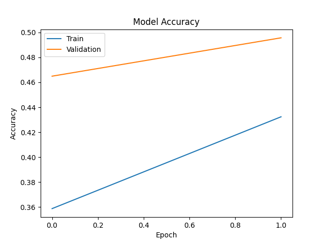
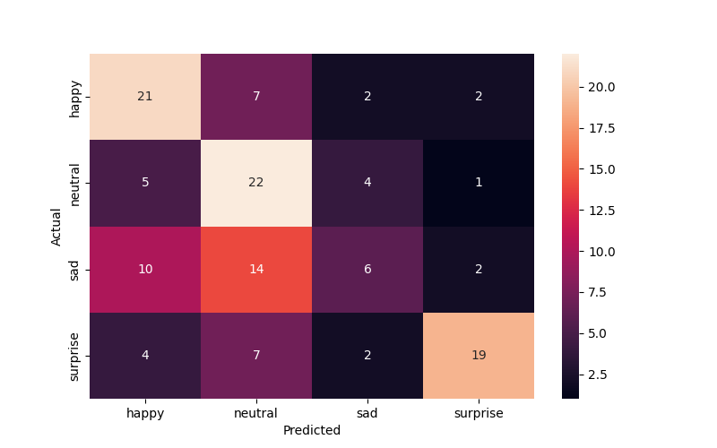
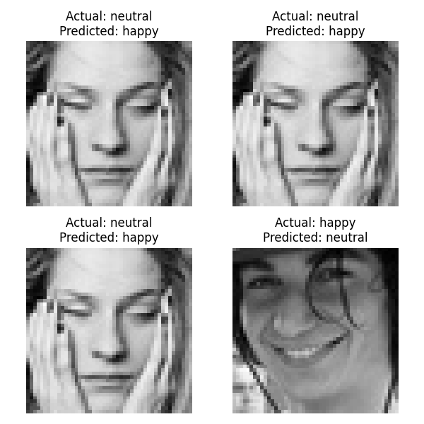

        <html>
        <head><title>Model Summary - 2024-04-10 00:06:40</title></head>
        <body>
        <h1>Model Summary</h1>
        <pre>Model: "sequential"
┏━━━━━━━━━━━━━━━━━━━━━━━━━━━━━━━━━━━━━━┳━━━━━━━━━━━━━━━━━━━━━━━━━━━━━┳━━━━━━━━━━━━━━━━━┓
┃ Layer (type)                         ┃ Output Shape                ┃         Param # ┃
┡━━━━━━━━━━━━━━━━━━━━━━━━━━━━━━━━━━━━━━╇━━━━━━━━━━━━━━━━━━━━━━━━━━━━━╇━━━━━━━━━━━━━━━━━┩
│ conv2d (Conv2D)                      │ (None, 48, 48, 32)          │             320 │
├──────────────────────────────────────┼─────────────────────────────┼─────────────────┤
│ max_pooling2d (MaxPooling2D)         │ (None, 24, 24, 32)          │               0 │
├──────────────────────────────────────┼─────────────────────────────┼─────────────────┤
│ conv2d_1 (Conv2D)                    │ (None, 24, 24, 64)          │          18,496 │
├──────────────────────────────────────┼─────────────────────────────┼─────────────────┤
│ max_pooling2d_1 (MaxPooling2D)       │ (None, 12, 12, 64)          │               0 │
├──────────────────────────────────────┼─────────────────────────────┼─────────────────┤
│ flatten (Flatten)                    │ (None, 9216)                │               0 │
├──────────────────────────────────────┼─────────────────────────────┼─────────────────┤
│ dense (Dense)                        │ (None, 64)                  │         589,888 │
├──────────────────────────────────────┼─────────────────────────────┼─────────────────┤
│ dense_1 (Dense)                      │ (None, 4)                   │             260 │
└──────────────────────────────────────┴─────────────────────────────┴─────────────────┘
 Total params: 608,964 (2.32 MB)
 Trainable params: 608,964 (2.32 MB)
 Non-trainable params: 0 (0.00 B)
</pre>
        <h2>Test Accuracy</h2>
        <p>
1/4 ━━━━━━━━━━━━━━━━━━━━ 0s 19ms/step - accuracy: 0.6562 - loss: 1.1258
4/4 ━━━━━━━━━━━━━━━━━━━━ 0s 6ms/step - accuracy: 0.5802 - loss: 1.1463 

1/4 ━━━━━━━━━━━━━━━━━━━━ 0s 40ms/step
4/4 ━━━━━━━━━━━━━━━━━━━━ 0s 6ms/step 
</p>
        <h2>Accuracy Plot</h2>
        
        <h2>Classification Report</h2>
        <pre>              precision    recall  f1-score   support

       happy       0.53      0.66      0.58        32
     neutral       0.44      0.69      0.54        32
         sad       0.43      0.19      0.26        32
    surprise       0.79      0.59      0.68        32

    accuracy                           0.53       128
   macro avg       0.55      0.53      0.51       128
weighted avg       0.55      0.53      0.51       128

</pre>
        <h2>History</h2>
        <pre>Epoch 1: accuracy: 0.3588, loss: 1.3266, val_accuracy: 0.4649, val_loss: 1.2166, learning_rate: 0.0010
Epoch 2: accuracy: 0.4324, loss: 1.2430, val_accuracy: 0.4957, val_loss: 1.1626, learning_rate: 0.0010
</pre>
        <h2>Confusion Matrix</h2>
        
        <h2>Predicted Images</h2>
        
        </body>
        </html>
        